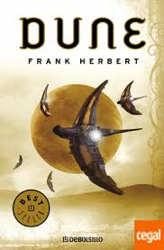

Bibliografia
El Universo de Dune es el escenario político, científico y social inventado por Frank Herbert para la saga original de seis novelas de ciencia ficción Dune. El primer libro de la saga, Dune (1965), fue adaptado en la película Dune (1984) de David Lynch y en una miniserie de televisión (2000); las segunda y tercera partes fueron adaptadas en otra miniserie de televisión (2003). El universo de Dune ha inspirado también varios videojuegos, incluyendo Dune II, uno de los primeros juegos de estrategia en tiempo real modernos.
Libros por Frank Herbert
- 